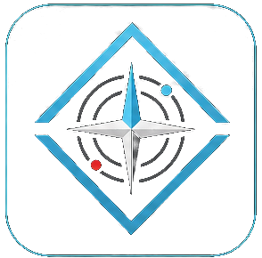
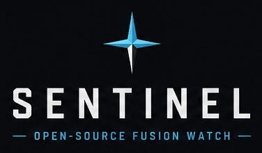

SIGACT map

Critical
High
Medium
Low
Situation synopsis
STRATEGIC
Awaiting first generation cycle…
OPERATIONAL
—
TACTICAL
—
Latest reporting
Sources
Morning audio briefing
Read transcript
No transcript is available yet.
AO High North daily analyst brief

Awaiting first brief generation cycle…